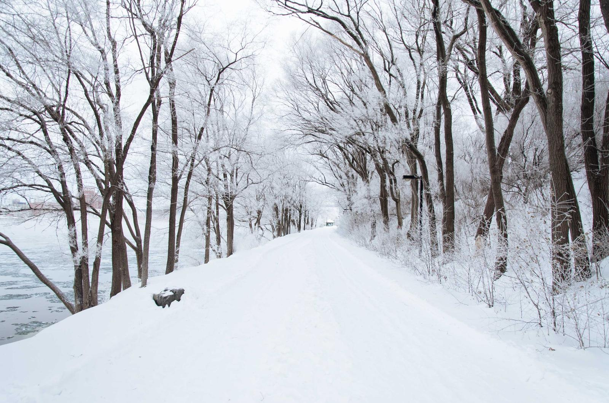
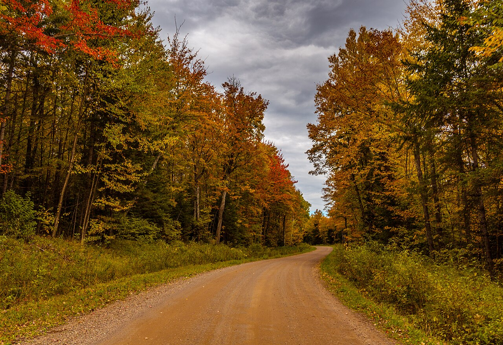
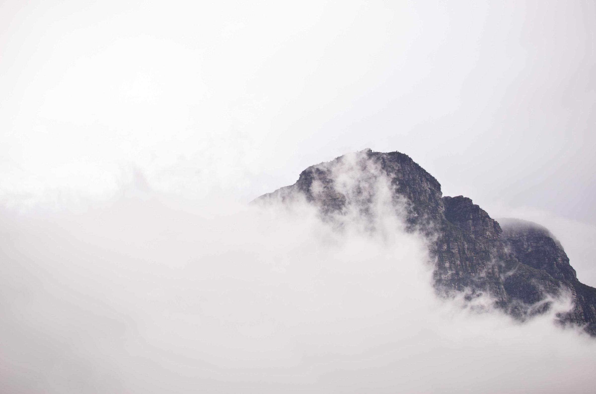

Where the ridge begins
The steepest stretch starts beyond Beech hollow. These distances are measured from the quarry gate.
- 0 kmQuarry gate
- 1.6 kmBeech hollow
- 3.2 kmUpper stile
- 4.8 kmGrass fork
- 6.4 kmRidge path
Trace a walk, mark a turning and keep the notes with the map. Saved walks open offline.
Open a sample walk
Footnote keeps your route, distance and field notes together when the signal drops.
Example walk · Quarry Ridge
From the example notebook for Quarry Ridge.
“At the fork above the quarry, take the grass path. The gravel track ends at a locked gate.”
Keep a short route on hand for the first frost, a clear autumn afternoon or a day under cloud.



Three entries from one walk, in the order they were recorded.
The track climbs beyond the stone gate.
Wet leaves cover the turn just below the ridge.
The view opens to the south at the second stile.
The steepest stretch starts beyond Beech hollow. These distances are measured from the quarry gate.
Save the part of your notebook you need for the next walk.
Open the path in your mapping app.
Print the route and the notes in walking order.
Keep a searchable copy of every entry.
The route card keeps the fork, distance and return point on one printable sheet.
Grass path uphill · gravel track closed